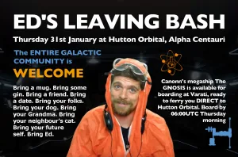

Join us this Thursday evening (31st January 3305) in Alpha Centauri at Hutton Orbital with The Hutton Truckers for an impromptu send off for the brilliant Ed Lewis, a long-term friend of Canonn Research and a hugely important member of the Galactic community. Bring rares, chaff, and buy mugs and gin.
The Gnosis is in Varati prepping for DIRECT transfer to the outpost Thursday morning, so be securely docked on board if you wish to avoid the long supercruise before 06:00UTC on Thursday.

Let’s make this a great send-off for Ed, from his many friends in the community.
Also take a look at a visual Fond Look Back at previous Educating Ed’s with a message about community from Ed himself, assembled by Cmdr Starbeaver and helpers.